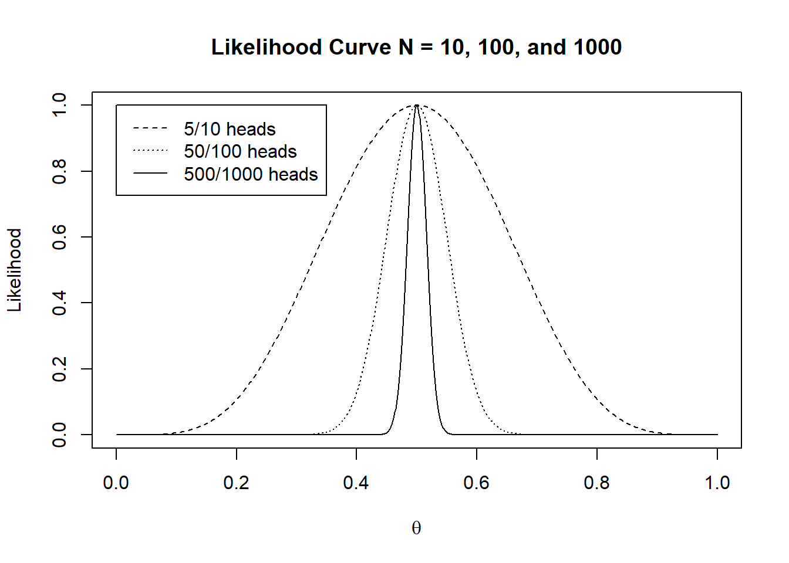
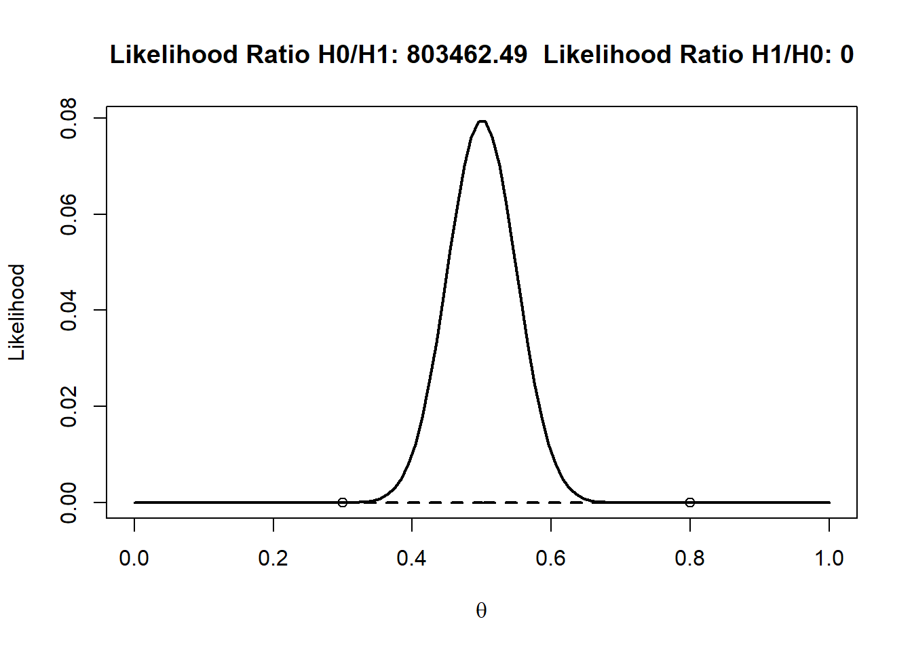
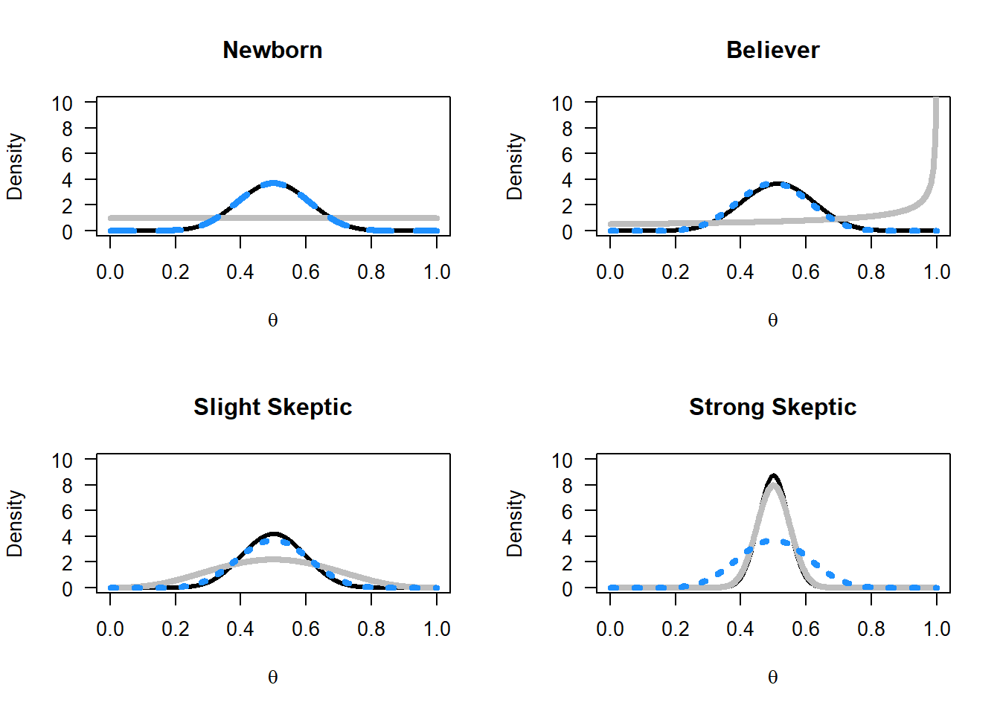
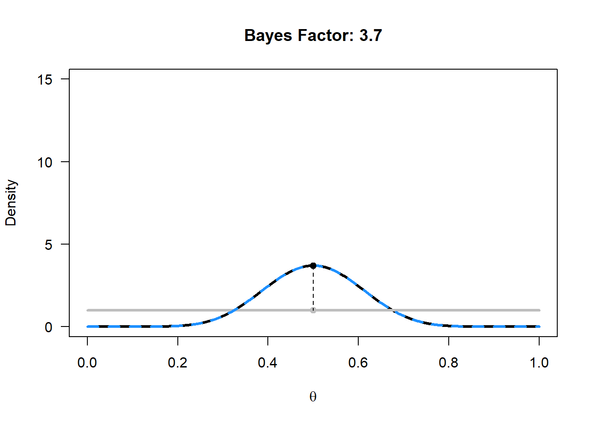

13 Bayesian statistics
Although frequentist statistics are by far the dominant approach in science, it is important to have had at least rudimentary exposure to Bayesian statistics during any statistics training. BEcause I am not an expert on this topic, I draw heavily on other sources, such as Yudi Pawitan’s book ‘In all likelihood: Statistical modeling and inference using likelihood’, Alex Etz’s blog posts on likelihoods, Simon Jackman’s book ‘Bayesian Analysis for the Social Sciences’, Lee & Wagenmakers course on Bayesian cognitive modeling, Alex Etz’s blog post on updating priors via the likelihood, and Jim Granges’ blog post on (pesky?) priors.
You will need considerably more education on Bayesian statistics than provided in this chapter before you can analyze your own data. In addition to the material mentioned above, you might want to explore Richard McElreath’s Statistical Rethinking, John Kruschke’s Doing Bayesian Data Analysis and Andrew Gelman’s and colleagues Bayesian Data Analysis.
13.1 Likelihoods
Likelihood approaches to statistical inferences can be seen as a third way to draw inferences from data, separate from Frequentist and Bayesian statistics. At the same time, likelihood functions are an important part of Bayesian statistics, so a better understanding of likelihoods will also make it easier to understand Bayesian statistics later. Where Frequentist and Bayesian statistics only allow probability-based inferences, the likelihood approach suggests that inference is possible directly from the likelihood function.
We can use likelihood functions to say something about unknown quantities. Let’s imagine you flip a coin 10 times, and it turns up heads 8 times. What is the true probability (which we will indicate by the Greek letter theta, θ) of this coin landing on heads?
The binomial probability of observing x successes in n studies is:
\[ P\left( \theta;x \right) = \frac{n!}{x!\left( n - x \right)!}*\theta^{x}*{(1 - \ \theta)}^{n - x} \]
where θ is the probability of a success. The first term indicates the number of possible combinations of results (e.g., you could start out with eight successes, end with eight successes, or any of the other possible combinations), which is multiplied by the probability of observing one success in each of the trials, which is then multiplied by the probability of observing no success in the remaining trials.
Let’s assume you expect this is a fair coin. What is the binomial probability of observing 8 heads out of 10 coin flips, when θ = 0.5? The answer is:
\[ P\left(0.5;8 \right) = \frac{10!}{8!\left( 10 - 8 \right)!}*0.5^{8}*{(1 - 0.5)}^{10 - 8} \] In r, you can compute this probability as:
## [1] 0.04394531or just by the function:
## [1] 0.04394531Let’s assume we don’t have any other information about this coin. (You might believe most coins are fair; such priors will be discussed when we talk about Bayesian statistics in the next section). The equation P(θ;x) gives the probability of observing x successes from n trials when a coin’s probability of success is θ. Based on the data we have observed, we can ask the question: which value of θ will make the observed data most likely? To answer this question, we can plug in the values for x and n into P(θ) and then find which value of θ maximizes this function. Ronald Fisher calls this maximum likelihood estimation, and published it when he was 22 as a third year undergraduate. Since θ can be any value between 0 and 1, we can plot all values in what is known as the likelihood curve, so we can see the maximum more easily.
# plot likelihood curve----
n <- 10 # set total trials
x <- 8 # set successes
theta <- seq(0, 1, len = 100) # create theta variable, from 0 to 1
like <- dbinom(x, n, theta) # create likelihood function
plot(theta, like, type = "l",
xlab = expression(theta), ylab = "Likelihood",
main = "Likelihood Curve")Figure 13.1: Likelihood curve for 8 out of 10 heads in a coin flip.

All possible values for θ from 0 to 1 are on the x-axis, and the likelihood function P(θ;x) is on the y-axis. It should not be surprising that the best guess we have is that the true parameter is 8 out of 10, or θ = 0.8, with a likelihood function value of 0.30 (the highest point on the y-axis). It is important to know that the value of the likelihood itself has no meaning in isolation. In this sense, it differs from a probability. The likelihood of 0.30 does not mean much in isolation, but we can compare likelihoods of the same curve, and compare different values of θ. You can read off any other value for any other θ, and see that for low values (e.g., 0.2), our observed data are not very likely.
Probabilities and likelihoods are related, but different. Note how the equation for P involves both information about the data (x, n) and information about the parameter (θ). To compute a probability, we view θ as fixed (for instance, for a fair coin, we plug in θ=.5) and then estimate the probability of different outcomes (x, n). The resulting function is the probability mass function. To compute likelihood, we instead view our data as fixed (e.g., observing 5 heads out of 10 coin tosses), and we view P as a function of theta, estimating the value that maximizes the likelihood of our particular sample.
Likelihoods are an example of statistical inference: We have observed some data, and we use this data to draw an inference about different parameters. More formally, the likelihood function is the (joint) density function evaluated at the observed data. Likelihood functions can be calculated for many different models (binomial distributions, normal distributions, see Millar (2011Millar, R. B. (2011). Maximum likelihood estimation and inference: With examples in R, SAS, and ADMB. Wiley.)).
The likelihood curve rises up and falls down, except at the extremes, when 0 heads or only heads are observed. When we plot the likelihood curves for 0 heads in 10 coin flips, the likelihood curve looks like:
Figure 13.2: Likelihood curve for 0 out of 10 heads in a coin flip.

Likelihoods can easily be combined. Imagine we have two people flipping the same coin independently. One person observes eight heads out of 10 flips, and the other observes 4 heads out of 10 flips. You might believe that this should give the same likelihood curve as one person flipping a coin 20 times, and observing 12 heads, and indeed, it does. In the plot below, all likelihood curves are standardized by dividing the curve by the maximum of each likelihood curve. This is why all curves now have a maximum of 1, and we can more easily compare different likelihood curves.
Figure 13.3: Combining likelihood curves.

The curve on left is for 4 out of 10 heads, the one on the right is for 8 out of 10 heads. The black dotted curve in the middle is for 12 out of 20 heads. The red curve, exactly underneath the 12 out of 20 heads curve, is calculated by multiplying the likelihood curves: L(θ_combined) = L(θ = 0.8) * L(θ = 0.4). In the plot, you can see that multiplying the likelihood curves for 4/10 heads and 8/10 heads (the red line) gives the same likelihood curve as that of 12/20 heads (black dotted line).
Figure 13.4: Likelihood curves for increasingly large sample sizes.
In the plot we see likelihood curves for 10, 100, and 1000 coin flips, which yield 5, 50, and 500 heads, respectively. The likelihood curves are again standardized to make them more easily comparable. As the sample size increases, the curves become more narrow (the dashed line is for n = 10, the dotted line is for n = 100, and the solid line is for n = 1000). This means that as the sample size increases, our data become increasingly less likely under any other distribution but one where the true value is θ = 0.5. Or, in other words, we have collected increasingly strong evidence for θ = 0.5, compared to most other possible values.
We can use the likelihood to compare possible values of θ. For example, we might believe the coin we flipped was fair, even though we flipped eight out of ten heads. A fair coin will have θ = 0.5, while we observed θ = 0.8. The likelihood tells us the relative preference we might have for different possible parameters. How much more likely is our observed data under the hypothesis that this is an unfair coin that will on average give heads 80% of the time, compared to the alternative theory that this is a fair coin which should give heads 50% of the time?
We can calculate the likelihood ratio:
\[ \frac{L(\theta = 0.8)}{L(\theta = 0.5)} \]
Which is 0.302/0.044=6.87. In the plot, both circles show the points on the likelihood curve for L(θ = 0.5) and L(θ = 0.8).
Figure 13.5: Likelihood ratio for 8 out of 10 heads in a coin flip for L(\(\theta\) = 0.5) and L(\(\theta\) = 0.8).

We can subjectively interpret this likelihood ratio, which tells us an unfair coin that our observed data is 6.87 times more likely under the hypothesis that this coin will give 80% heads than under the hypothesis that this is a fair coin. How convincing is this? Let’s round the likelihood ratio to 7, and imagine two bags of marbles. One bag contains 7 blue marbles. The second contains 7 marbles, each one a different color of the rainbow, so violet, indigo, blue, green, yellow, orange, and red. Someone randomly picks one of the two bags, draws a marble, and shows it to you. The marble is blue: How certain are you this marble came from the bag with all blue marbles, compared to the bag with rainbow coloured marbles? This is how strong the likelihood ratio tells us to believe our data were generated by an unfair coin with 80% heads is over a fair coin with 50% heads, given that we have flipped 8 heads in 10 tosses.
Figure 13.6: Likelihood ratio for 8 out of 10 heads in a coin flip for L(\(\theta\) = 0.5) and L(\(\theta\) = 0.8).

Note that likelihood ratios give us the relative evidence for one specified hypothesis, over another specified hypothesis. The likelihood ratio can be calculated for any two hypothesized values. For example, in the graph below, the likelihood ratio is calculated that compares the hypothesis for a fair coin (θ = 0.5) with the alternative hypothesis that the coin produces 80% heads (θ = 0.8), when we have observed 4 heads out of 10 coin flips. We see that the observed data are 0.2050/0.0055=37.25 times more likely (ignoring rounding differences – and try to calculate these numbers by hand using the formula provided earlier) under the hypothesis that this is a fair coin is than under the hypothesis that this is a coin that gives 80% heads.
A likelihood ratio of 1 means the data are equally likely under both hypotheses. Values further away from 1 indicate that the data are more likely under one hypothesis than the other. The ratio can be expressed in favor of one hypothesis over the other (for example L(θ = 0.5)/L(θ = 0.8) or vice versa (L(θ = 0.8)/[L(θ = 0.5). This means the likelihood ratio of 37.25 is equivalent to a likelihood ratio of 1/37.25 = 0.02685. Likelihood ratios range from 0 to infinity, and the closer to zero or infinity, the stronger the relative evidence for one over the other. We will later see that likelihood ratios are a special case of a more general statistic called a Bayes Factor.
Figure 13.7: Likelihood ratio for 50 out of 100 heads in a coin flip for L(\(\theta\) = 0.3) and L(\(\theta\) = 0.8).
Likelihoods are relative evidence. Just because the data are more likely under one possible value of θ than another value, doesn’t mean that the data have come from either of these two distributions. Other values might generate even higher likelihood values. For example, consider the situation where we flip a coin 100 times, and observe 50 heads. We compare θ = 0.3 versus θ = 0.8, and find that the likelihood ratio is 803462, implying that there is 803461 times more evidence in the data for θ = 0.3 than for θ = 0.8. That might sound pretty conclusive evidence for θ = 0.3. But it is only relative evidence for θ = 0.3 compared to θ = 0.8. If we look at the likelihood function, we clearly see that, not surprisingly, θ = 0.5 is the value that maximizes the likelihood function (you can recreate this plot in R if you want to). The likelihood function will always peak at the observed sample proportion.
We have seen how likelihood functions allow us to evaluate the relative likelihood of the data we have collected under different possible true values of the parameter (or different hypotheses). We have focused on binomial likelihoods, but likelihood functions exist for many different distributions (e.g., Poisson, normal, etc.). We will continue using binomial likelihoods when we learn about Bayesian statistics.
When we do research, we often start with a prior belief that a hypothesis is true. Then, we collect data, and we use this data to update our belief that a theory is true. Bayesian statistics allows you to update prior beliefs into posterior probabilities in a logically consistent manner. Before we have collected data, the prior odds of Hypothesis 1 (H1) over the null-hypothesis (H0) are P(H1)/P(H0), After we have collected data, we have the posterior odds P(H1|D)/P(H0|D), which you can read as the probability of H1, given the data, divided by the probability of H0, given the data. There are different approaches to Bayesian statistics. We will first discuss Bayes factors, and then Bayesian estimation.
13.2 Bayes factors
One approach in Bayesian statistics focuses on the comparison of different models that might explain the data (referred to as model comparison). In Bayesian statistics, the probability of data under a specified model (D|P(H0) is a number that expressed what is sometimes referred to as the absolute evidence, and more formally referred to as a marginal likelihood. The marginal likelihood uses prior probabilities to average the likelihood across the parameter space. For example, assume we have a simple model M that is based on a single parameter, that can take on two values, X and Y, and that a-prior we believe the probability of both values is p(X) = 0.4 and p(Y) = 0.6. We collect data, and calculate the likelihood for both these parameter values, which is p(D|X) = 0.02 and p(D|Y) = 0.08. The marginal likelihood of our model M is then P(D|M) = 0.4 × 0.02 + 0.6 × 0.08 = 0.056. Most often, models have continuously varying parameters, and the marginal likelihood formula is based on an integral, but the idea remains the same.
When comparing models, we do not use the absolute evidence for a model, but the relative evidence for models we are comparing. The relative evidence is calculated by dividing the marginal likelihood for one model by the marginal likelihood for another model, and this ratio of relative evidence based on these marginal likelihoods is called the Bayes factor. The Bayes factor represents how much we have updated our beliefs, based on observing the data. We can express Bayes factors to indicate how much more likely H1 is given the data compared to H0 (often indicated by B10) or as how much more likely H0 has become compared to H1 (B01), and B10 = 1/B01. Similar to likelihood ratios, a Bayes factor of 1 did not change our beliefs for one model compared to the other model. A very large Bayes factor for H1 over H0 has increased our belief in H1, and a Bayes Factor close for H1 over H0 to 0 has increased our belief in H0. If our prior belief in H1 was very, very low (e.g., your belief in unicorns) even a large Bayes factor that supports the presence of a unicorn might not yet convince you that unicorns are real – but you have updated your belief in unicorns, and now believe they are at least more likely then they were before (even if you still think unicorns are very unlikely to exist). The contribution of the Bayes Factor and the prior in calculating the posterior odds is clear in the following formula:
\[ \frac{P(H1|D)}{P(H0|D)} = \ \frac{P(D|H1)}{P(D|H0)}\ \times \ \frac{P(H1)}{P(H0)} \]
\[ Posterior\ Probability = \ Bayes\ Factor\ \times \ Prior\ Probability \]
A Bayesian analysis of data requires specifying the prior. Here, we will continue our example based on a binomial probability, such as a coin flip. In the likelihood example, we compared two point hypotheses (e.g., θ = 0.5 vs. θ = 0.8). In Bayesian statistics, parameters are considered to be random variables, and the uncertainty or degree of belief with respect to the parameters is quantified by probability distributions.
A binomial probability lies between 0 and 1. You could draw any probability density you want over 0 and 1, and turn it into a prior, but for good reasons (simplicity, mostly) a beta-prior is often used for binomial probabilities. The shape of the beta-prior depends on two parameters, α and β. Note that these are the same Greek letters as used for the Type 1 error rate and Type 2 error rate, but that is purely coincidental! The α and β in binomial probabilities are unrelated to error rates, and the use of the same letters is mainly due to a lack of creativity among statisticians and the limited choice the alphabet gives us. It also does not help that β is one of the parameters of the Beta distribution. Try to keep these different Beta’s apart! The probability density function is:
\[ \int_{}^{}{\left( x,\ \alpha,\ \beta \right) = \ \frac{1}{B(\alpha,\beta)}}x^{\alpha - 1}{(1 - x)}^{\beta - 1} \]
where B(α, β) is the beta function. Understanding the mathematical basis of this function is beyond the scope of this chapter, but you can read more on Wikipedia or in John Kruschke’s book if interested. The beta-prior for a variety of values for α and β can be seen in the figure below.
Figure 13.8: Four examples of Bayesian priors

These beta densities reflect different types of priors. Let’s assume you are approached by a street merchant who tries to sell you a special coin with heads and tails that, when flipped, will almost always turn up heads. The α = 1, β = 1 prior is what a newborn baby would have as a prior, without any idea of what to expect when you flip a coin, and thus every value of θ is equally likely. The α = 1, β = 1/2 prior is what a true believer would have as a prior. The sales merchant tells you the coin will turn up heads almost every time, and thus, you believe it will turn up heads almost every time. The α = 4, β = 4, and the α = 100, β = 100 priors are for slightly and extremely skeptical people. With an α = 4, β = 4 prior, you expect the coin will be fair, but you are willing to believe a wide range of other true values is possible (the curve is centered on 0.5, but the curve is wide, allowing for very high and low values of θ). With the α = 100, β = 100 prior you are really convinced coins are fair, and believe there will be only a very slight bias, at most (the curve is again centered on 0.5, and a skeptic believes the θ will lie between 0.4 and 0.6 – a much narrower range compared to the slightly skeptic individual).
Let’s assume the newborn baby, the true believer, the slightly skeptic and the extreme skeptic all buy the coin, flip it n = 20 times, and observe x = 10 heads. This outcome can be plotted as a binomial distribution with 10 heads out of 20 trials, or as a Beta(11, 11) distribution.
The newborn baby had a prior Beta distribution with α = 1 and β = 1, which equals a binomial likelihood distribution for 0 heads out of 0 trials. The posterior is a Beta distribution with Beta(α*, β*), where:
α* = α + x = 1 + 10= 11
β* = β + n – x = 1 + 20 – 10 = 11
Or calculating these values more directly from the α and β of the prior and likelihood:
α* = αprior + αlikelihood – 1 = 1 + 11 - 1= 11
β* = βprior + βlikelihood - 1 = 1 + 11 – 1 = 11
Thus, the posterior distribution for the newborn is a Beta(11,11) distribution. This equals a binomial likelihood function for 10 heads out of 20 trials, or Beta(11,11) distribution. In other words, the posterior distribution is identical to the likelihood function when a uniform prior is used.
Take a look at the Figure below. Given 10 heads out of 20 coin flips, we see the prior distribution of the newborn (the horizontal grey line), the likelihood (the blue dotted line) and the posterior (the black line).
Figure 13.9: Four examples of how different priors are updated based on data to the posterior.
For the true believer the posterior distribution is not centered on the maximum likelihood of the observed data, but just a bit in the direction of the prior. The slightly skeptic and the strong skeptic end up with a much stronger belief in a fair coin after observing the data, but mainly because they already had a stronger prior that the coin was fair.
13.2.1 Updating our belief
Now that we have a distribution for the prior, and a distribution for the posterior, we can see in the graphs below for which values of θ our belief has increased. Everywhere where the black line (of the posterior) is higher than the grey line (of the prior) our belief in that θ has increased.
Figure 13.10: Plot for the prior, likelihood, and posterior.

The Bayes Factor is used to quantify this increase in relative evidence. Let’s calculate the Bayes Factor for the hypothesis that the coin is fair for the newborn. The Bayes Factor is simply the value of the posterior distribution at θ = 0.5, divided by the value of the prior distribution at θ = 0.5:
BF10 = Beta(θ = 0.5, 11, 11)/Beta(θ = 0.5, 1, 1) = 3.70/1 = 3.70
You can check this in an online Bayes Factor calculator by Jeff Rouder and Richard Morey: http://pcl.missouri.edu/bf-binomial. At successes, fill in 10, at trials, fill in 20. We want to calculate the Bayes Factor for the point null value of θ = 0.5, so fill in 0.5. The α and β for the prior are both 1, given the newborns prior of Beta(1,1). Clicking ‘submit query’ will give you the Bayes factor of 3.70.
We can calculate and plot the Bayes Factor, and show the prior (grey), likelihood (dashed blue) and posterior (black). For the example of 20 flips, 10 heads, and the newborn prior, the plot looks like this:
Figure 13.11: Plot for the prior, likelihood, and posterior.
We see that for the newborn, θ = 0.5 has become more probable, but so has θ = 0.4.
Figure 13.12: Plot for the prior, likelihood, and posterior.

Let’s assume the strong skeptic, who believes the coin is fair with a prior of Beta(100, 100), buys the coin and flips it 100 times. Surprisingly, the coin comes up heads 90 out of 100 flips. The plot of the prior, likelihood, and posterior now looks much more extreme, because we had a very informed prior, and extremely different data. We see the grey prior distribution, the dashed blue likelihood based on the data, and the posterior distribution in black. The Bayes Factor of 0 represents the substantial drop in belief that the coin is fair – indeed, this now seems an untenable hypothesis, even for the strong skeptic. It shows how data can update your belief. Where a newborn would now completely believe that the true θ for the coin is somewhere around 0.9, the strong skeptic has more reason to believe the θ is around 0.65, due to the strong prior conviction that the coin is fair. Given enough data, even this strong skeptic will become convinced that the coin will return heads most of the time as well.
We can now also see the difference between a likelihood inference approach, and a Bayesian inference approach. In likelihood inference, you can compare different values of θ for the same likelihood curve (e.g., θ = 0.5 vs θ = 0.8) and calculate the likelihood ratio. In Bayesian inference, you can compare the difference between the prior and the posterior for the same value of θ, and calculate the Bayes Factor.
If you have never seen Bayes Factors before, you might find it difficult to interpret the numbers. As with any guideline (e.g., interpreting effect sizes as small, medium, and large) there is criticism on the use of benchmarks. On the other hand, you have to start somewhere in getting a feel for what Bayes Factors mean. A Bayes factor between 1 and 3 is considered ‘not worth more than a bare mention’, larger than 3 (or smaller than 1/3) is considered ‘substantial’, and larger than 10 (or smaller than 1/10) is considered ‘strong’. These labels refer to the increase in how much you believe a specific hypothesis, not in the posterior belief in that hypothesis. If you think extra-sensory perception is extremely implausible, a single study with a BF = 14 will increase your belief, but you will now think extra-sensory perception is pretty much extremely implausible.
13.3 Bayesian Estimation
The posterior distribution summarizes our belief about the expected number of heads when flipping a coin after seeing the data, by averaging over our prior beliefs and the data (or the likelihood). The mean of a Beta distribution can be calculated by α/(α+β). We can thus easily calculate the mean of a posterior distribution, which is the expected value based on our prior beliefs and the data.
We can also calculate a credible interval around the mean, which is a Bayesian version of a confidence interval with a slightly different interpretation. Instead of the Frequentist interpretation where a parameter has one (unknown) true value, the Bayesian approach considers the data fixed, but allow the parameter to vary. In Bayesian approaches, probability distributions represent our degree of belief. When calculating a credible interval, one is saying ‘I believe it is 95% probable (given my prior and the data) that the true parameter falls within this credible interval’. A 95% credible interval is simply the area of the posterior distribution between the 0.025 and 0.975 quantiles.
A credible interval and a confidence interval are the same, when a uniform prior (e.g., Beta(1,1)) is used. In this case, credible interval is numerically identical to the confidence interval. Only the interpretation differs. Whenever an informed prior is used, the credible interval and confidence interval differ. If the chosen prior is not representative of the truth, the credible interval will not be representative of the truth, but it is always a correct formalization of your beliefs. For a single confidence interval, the probability that it contains the true population parameter is either 0 or 1. Only in the long run will 95% of confidence intervals contain the true population parameter. These are important differences between Bayesian credible intervals and Frequentist confidence intervals to keep in mind.
We can plot the mean for the posterior when 10 heads out of 20 coin flips are observed, given a uniform prior.
n <- 20 # set total trials
x <- 10 # set successes
aprior <- 1 # Set the alpha for the Beta distribution for the prior
bprior <- 1 # Set the beta for the Beta distribution for the prior
ymax <- 10 # set max y-axis
alikelihood <- x + 1 # Calculate the alpha for the Beta distribution for the likelihood
blikelihood <- n - x + 1 # Calculate the beta for the Beta distribution for the likelihood
aposterior <- aprior + alikelihood - 1 # Calculate the alpha for the Beta distribution for the posterior
bposterior <- bprior + blikelihood - 1 # Calculate the beta for the Beta distribution for the posterior
theta <- seq(0, 1, 0.001) # create theta range from 0 to 1
prior <- dbeta(theta, aprior, bprior) # deterine prior distribution
likelihood <- dbeta(theta, alikelihood, blikelihood) # determine likelihood distribution
posterior <- dbeta(theta, aposterior, bposterior) # determine posterior distribution
plot(theta, posterior, ylim = c(0, ymax), type = "l", lwd = 3, xlab = bquote(theta), ylab = "Density", las = 1) # draw posterior distribution
lines(theta, prior, col = "grey", lwd = 3) # draw prior distribution
lines(theta, likelihood, lty = 2, lwd = 3, col = "dodgerblue") # draw likelihood distribution
LL <- qbeta(.025, aposterior, bposterior) # calculate lower limit credible interval
UL <- qbeta(.975, aposterior, bposterior) # calculate upper limit credible interval
abline(v = aposterior / (aposterior + bposterior)) # draw line mean
abline(v = LL, col = "grey", lty = 3) # draw line lower limit
abline(v = UL, col = "grey", lty = 3) # draw line upper limit
polygon(c(theta[theta < LL], rev(theta[theta < LL])), c(posterior[theta < LL], rep(0, sum(theta < LL))), col = "lightgrey", border = NA)
polygon(c(theta[theta > UL], rev(theta[theta > UL])), c(posterior[theta > UL], rep(0, sum(theta > UL))), col = "lightgrey", border = NA)
title(paste("Mean posterior:", round((aposterior / (aposterior + bposterior)), digits = 5), ", 95% Credible Interval:", round(LL, digits = 2), ";", round(UL, digits = 2)))
We can also use the ‘binom’ package to calculate the posterior mean, credible interval, and highest density interval (HDI). The highest density interval is an alternative to the credible interval that works better when the posterior beta distribution is skewed (and is identical when the posterior distribution is symmetrical. We won’t go into the calculations of the HDI here.
library(binom)
n <- 20 # set total trials
x <- 10 # set successes
aprior <- 1 # Set the alpha for the Beta distribution for the prior
bprior <- 1 # Set the beta for the Beta distribution for the prior
binom.bayes(x, n, type = "central", prior.shape1 = aprior, prior.shape2 = bprior)## method x n shape1 shape2 mean lower upper sig
## 1 bayes 10 20 11 11 0.5 0.2978068 0.7021932 0.05## method x n shape1 shape2 mean lower upper sig
## 1 bayes 10 20 11 11 0.5 0.2978068 0.7021932 0.05The posterior mean is identical to the Frequentist mean, but this is only the case when the mean of the prior equals the mean of the likelihood (Albers et al., 2018Albers, C. J., Kiers, H. A. L., & Ravenzwaaij, D. van. (2018). Credible Confidence: A Pragmatic View on the Frequentist vs Bayesian Debate. Collabra: Psychology, 4(1), 31. https://doi.org/10.1525/collabra.149).
This chapter shows the essence of Bayesian inference, where we decide upon a prior distribution, collect data and calculate a marginal likelihood, and use these to calculate a posterior distribution. From this posterior distribution, we can estimate the mean and the 95% credible interval.For any specific hypothesis, we can calculate the relative evidence for a posterior model, compared to a prior model, through the Bayes Factor. In your research, you will most likely need other calculations than the binomial example we have used here. The math and the priors become more complex, but the basic idea remains the same. You can use Bayesian statistics to quantify relative evidence, which can inform you how much we should believe, or update our beliefs, in theories.
Page built: 2020-08-11